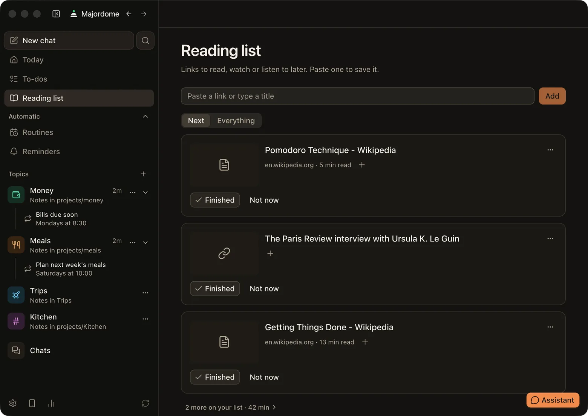
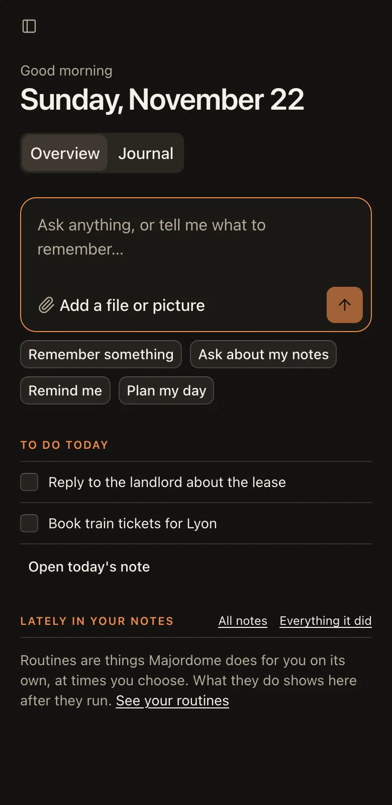

Free and open source, for Mac. A fork of
T3 Code.
A second brain that keeps working while you are away.
Your notes, plus the AI you already pay for. It reads them, runs routines, and asks before touching anything sensitive.
For Apple silicon. Intel Mac? No Majordome account.
Two things you have. One app.
One day with it.
-
while you sleep
Your day is ready
A summary from your notes and calendar.
-
you
Drop things in
A receipt, a link, a thought. It files them.
-
on your phone
It asks first
One tap before it opens anything private.
-
while you are out
Routines run
“Every Friday, list what I spent.”
What it does.
Every to-do, from every note
Tick one here and it is ticked in its note.

Routines, in your words
Say what and when. It runs on schedule and posts where you choose.
How routines work
A reading list that says what is next
Three things at a time. Finished, or not now.

A topic for each part of life
Money, Meals, Trips: one chat, its notes, its routines.


Yours, all the way down.
- Your filesMarkdown on your machine.
- Your AI planClaude or ChatGPT. Nothing extra.
- Your machinesNo account, no service.
- Open sourceMIT. A fork of T3 Code.
Four steps.
- Download the file for your Mac from the latest release.
- Drag Majordome to Applications and open it.
- Sign in to Claude or ChatGPT on the welcome screen. It installs what it needs.
- Choose your notes: start new ones, or point it at a folder you already have.
Download for Mac
Work in progress, updated often.
What's new